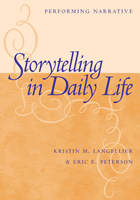

A guide to understanding storytelling in context
A guide to understanding storytelling in context


 A guide to understanding storytelling in context
A guide to understanding storytelling in context

|  |
Storytelling in Daily LifePerforming NarrativeKristin M. Langellier and Eric E. Petersonpaper EAN: 978-1-59213-213-3 (ISBN: 1-59213-213-8) |
"Storytelling in Daily Life is remarkably coherent and immediately invaluable. This will be a model for approaching narrative performatively: actively, productively, critically, and creatively. It is extremely timely, and most original in what I would call its radical empiricism. The chapter on family storytelling is a brilliant new take on the subject. No other book currently engages the performance of narrative/narrative performance critically with such incisiveness."
—Della Pollock, Department of Communication Studies, The University of North Carolina at Chapel Hill
Storytelling is perhaps the most common way people make sense of their experiences, claim identities, and "get a life." So much of our daily life consists of writing or telling our stories and listening to and reading the stories of others. But we rarely stop to ask: what are these stories? How do they shape our lives? And why do they matter?
The authors ably guide readers through the complex world of performing narrative. Along the way they show the embodied contexts of storytelling, the material constraints on narrative performances, and the myriad ways storytelling orders information and tasks, constitutes meanings, and positions speaking subjects. Readers will also learn that narrative performance is consequential as well as pervasive, as storytelling opens up experience and identities to legitimization and critique. The authors' multi-leveled model of strategy and tactics considers how relations of power in a system are produced, reproduced, and altered in performing narrative.
The authors explain this strategic model through an extended discussion of family storytelling, using Franco Americans in Maine as their exemplar. They explore what stories families tell, how they tell them, and how storytelling creates family identities. Then, they show the range and reach of this strategic model by examining storytelling in diverse contexts: a breast cancer narrative, a weblog on the Internet, and an autobiographical performance on the public stage. Readers are left with a clear understanding of how and why the performance of narrative is the primary communicative practice shaping our lives today.
Excerpt available at www.temple.edu/tempress
"Storytelling in Daily Life is stunning, a major contribution to narrative studies. The authors, using a variety of interesting and varied examples, theorize and empirically analyze how storytelling works as an emergent communicative relational practice. Stories represent, produce, and complicate dominant identities and hierarchies (of family, gender, ethnicity, in web/digital communication, narratives of illness experience and sexuality)—our multiple 'selves.' The performance approach to narrative has never been better articulated."
—Catherine Kohler Riessman, Research Professor of Sociology, Boston College
Acknowledgments
Part I. A Communication Approach to Storytelling
1. Performing Narrative in Daily Life
Part II. Family Storytelling: A Strategy of Small Group Culture
2. Ordering Content and Making Family Stories
3. Family Storytelling: Ordering Tasks in Small Group Cultures
4. Performing Families: Ordering Group and Personal Identities
Part III. Storytelling Practices: Three Case Studies
5. Storytelling in a Weblog: Performing Narrative in a Digital Age
6. Breast Cancer Storytelling: The Limits of Narrative Closure in Survivor Discourse
7. Performing Narrative on Stage: Identity and Agency in an Autobiographical Performance
Coda
Notes
References
Index
Kristin M. Langellier is Mark and Marcia Bailey Professor at the University of Maine where she teaches communication and women's studies. A former editor of Text and Performance Quarterly, she has published numerous journal articles on personal narrative, family storytelling, and Franco American cultural identity.
Eric E. Peterson is Associate Professor at the University of Maine where he teaches communication. He is coeditor of a recent book on public broadcasting and has published a variety of journal articles on narrative performance, media consumption, and communication diversity and identity.
Mass Media and Communications
Anthropology
Sociology
© 2015 Temple University. All Rights Reserved. This page: http://www.temple.edu/tempress/titles/1717_reg.html.